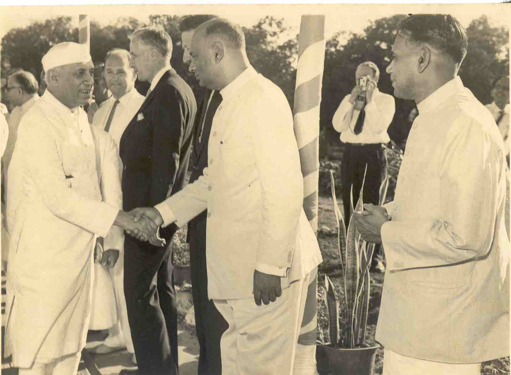
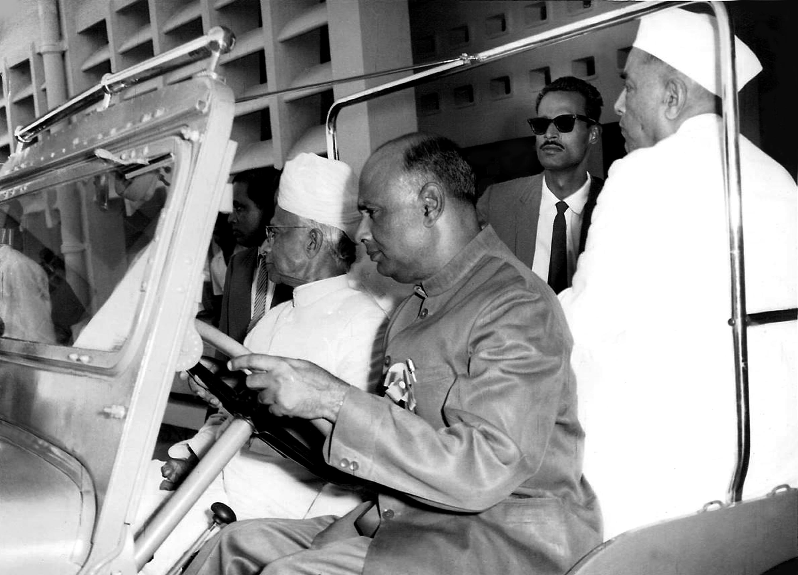
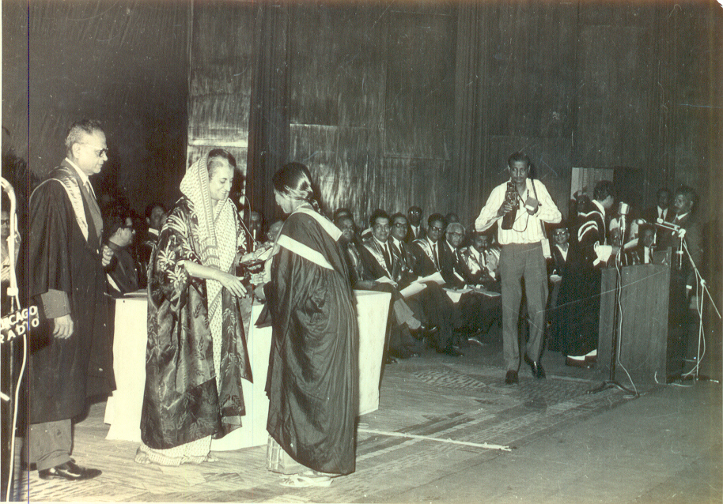
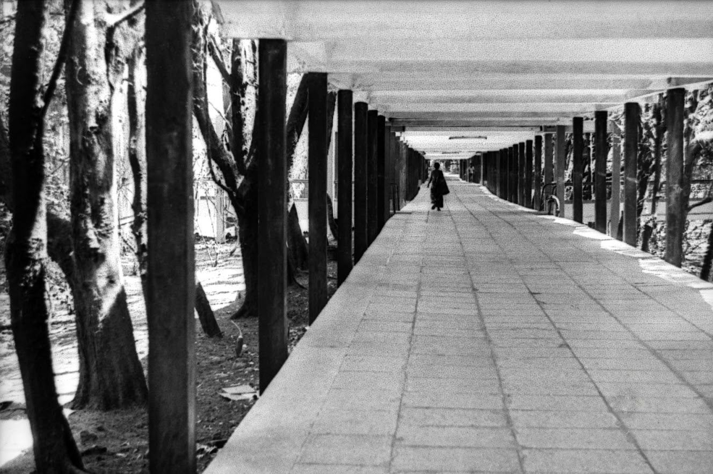
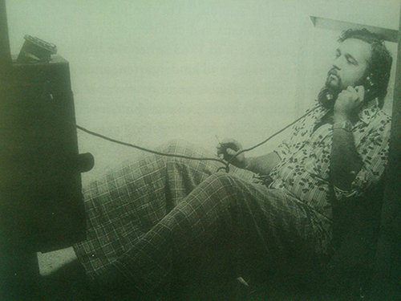
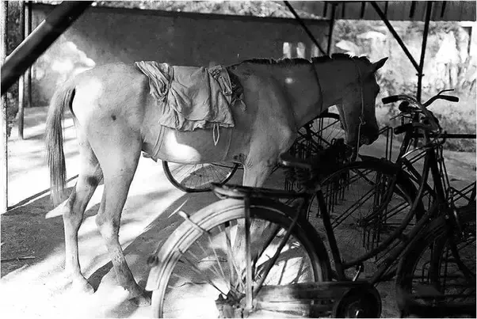

While much has changed, the soul of the campus still feels the same.
This webpage is intentionally designed with a vintage, minimalistic HTML look to match the nostalgic feel of old IIT Bombay photographs. The images have been identified or collected with help from my friend Ninad the Gujju (The Man of the CMINDS).
If you come across any old picture that can be recreated today, please let me know. You can try clicking on some of the images — and if you're lucky, you might see their present-day (2024) counterpart. The page is still under construction, and I'll continue updating it as I gather more recent photos. Some of the archived images found online are difficult to trace — the locations may have changed, some hostels have been demolished, and the campus continues to evolve.
P.S.: This page is still under construction, and I am too lazy to update the descriptions.
×

Images taken from IIT Bombay website.

Bird's eye view of the Main Building, looking towards Ghatkopar hills.

Nehru with Prof. Bose, the first Director of IIT Bombay, the nephew of Subhas Chandra Bose.

Dr. Radhakrishnan with Prof. Bose.

Prof. S.P. Sukhatme is teaching heat transfer to a class of 70 students who are a few years younger than him.
Look closer!

Indira Gandhi and Convocation.

My fair lady enacted by lads.

First Girl student.

4-tuple biking.
R. D. Burman and Asha Bhosle

Punch cards and low-power computations.
The Boys
Foundation Stone & Nehru
Images taken from Quora. These images are of around 1983-85.

The infinity Corridore.

The water pipeline.
Well, I dug up and found this,
this and
this picture.
Sad, that all that remain of that route is the broken train-line :')
{kind=link}
{kind=link}
{kind=link}
An unidentified place would be of great help in identifying the place's location.

A view from Sameer Hills.
Images taken from here.

IIT Bombay campus as in 1970 vs 2003 (a view from Sameer Hills).
Images taken from here.

IIT Bombay campus as in 1970, we can see a lot of vegetation has been planted artificially.
Images taken from Quora, a post by Ankit Rana.
"Rohit Manchanda in his book Monastery, Sanctuary, Laboratory: 50 Years of IIT-Bombay provides us a glimpse of life as it was then, the innovative and sometimes eccentric means of filling up great swathes of private time available to students."
Description for Image 1

Description for Image 1

Description for Image 1

Description for Image 1

Description for Image 1
Description for Image 1
Description for Image 1

Description for Image 1
Description for Image 1

Description for Image 1

Description for Image 1

Description for Image 1

Description for Image 1
Description for Image 1

Description for Image 1
I don't exactly remember the source of these images.

Description for Image 1

Description for Image 1
Description for Image 1
Description for Image 1